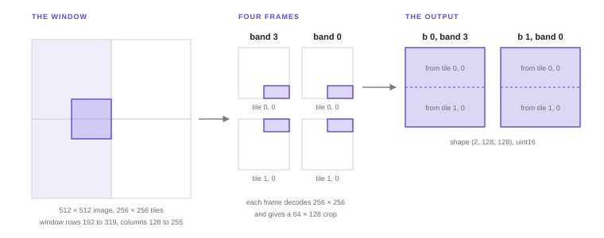

How Rumi reads
- How a query becomes a tensor, step by step, on the CPU and on a GPU.
This page explains how rumi.read() and rumi.read_many() turn a query into a tensor. It follows one read through its six steps, from checking the query to handing the tensor to PyTorch. Then it shows what changes on a GPU, how read_many() reads a batch in one plan, and how both fit a PyTorch DataLoader.
The query
The example reads two bands of a public Sentinel-2 tile and returns a PyTorch tensor. The file is a 512 by 512 Image with four uint16 bands, stored in 256 by 256 tiles with one band per frame.
from urllib.request import Request, urlopen
import rumi
BASE = "https://data.source.coop/asterisk-labs/rumi-api-fixtures"
def fetch(url):
request = Request(url, headers={"User-Agent": "rumi-example"})
with urlopen(request) as response:
return response.read()
header = fetch(f"{BASE}/headers/s2-00-tile.header")
chip = rumi.read(
f"{BASE}/data/s2-00-tile.rumi",
header,
bands=[3, 0],
window=(192, 128, 128, 128),
pattern="b y x",
framework="torch",
device="cpu",
)
assert chip.shape == (2, 128, 128)Every argument answers one of four questions.
| Which file | source and header |
|---|---|
| Which samples | bands and window, the last as (row, column, height, width), plus time when the file is a Cube |
| Which shape | pattern, the order of the output axes |
| Where it goes | framework, the array library, and device, CPU or GPU memory |
The header argument is the file's external header, a small index kept apart from the file, 58 bytes here. It holds the shape, dtype, tile size, frame layout and the compressed size of every frame. With it Rumi computes every byte range it needs without reading anything from the file first.
1. Check the query
read() in bindings/python/rumi/_read.py parses the external header and checks the selection against it before it opens the source. Every band and time index must exist, the window must fit inside the image, and the framework must be able to hold the dtype. A mistake raises TypeError or ValueError here, before any byte is read.
The checked selection goes to the C API, rumi_read_dlpack() in core/src/capi.cpp. It checks the same things again, because C, R and Julia call it without Python.
2. Fix the output
Rumi knows the size of the result before it reads a single frame. The output axes are n, t, b, y and x, for item, time, band, row and column. The pattern puts them in order. The default is b y x for an Image and t b y x for a Cube, with n in front for read_many(). An axis can be left out only when its extent is one, and parentheses merge axes, so (t b) y x stacks time and band into one channel axis.
From the pattern and the selection Rumi computes the shape and the stride of every axis, then allocates one buffer of exactly that size. In the example the shape is (2, 128, 128) and the buffer holds 65,536 bytes. Every later step writes into this buffer, so nothing is stacked or reshaped at the end.
3. Plan the frames
The plan turns the query into the list of byte ranges Rumi will request. Each entry says which bytes to fetch and where their samples go in the output. Rumi builds it from the external header alone, in append_read_plan() in core/src/read.cpp.
For instance, the window in the example touches two tiles, and the file keeps one band per frame, so bands 3 and 0 make four frames. From each 256 by 256 frame the read keeps a 64 by 128 crop.

At this point Rumi has read only the external header and not a single byte of the file. From a tile to its bytes, in the Overview, works through that arithmetic step by step.
4. Fetch the bytes
How the bytes arrive depends on the source.
| Bytes in memory | Each task copies its range from the buffer. |
|---|---|
| A local path | Each Rumi worker reads its own range from the file. |
| A remote URI | https://, s3://, hf:// and the other remote schemes go to Karu, every range of the read in one batch. |
Karu is the transport library under Rumi. It knows offsets and lengths, not frames. It merges ranges that sit close together into fewer requests, runs them on its own I/O threads, four by default or KARU_IO_THREADS, and returns each finished range tagged with the task that asked for it.
Rumi submits the remote batch first. While Karu downloads, the Rumi workers decode the local frames, then decode the remote frames in waves as they arrive. rumi.read() still blocks until the tensor is ready, and the overlap happens underneath it. In the example all four ranges are remote and go to Karu together.
5. Decode and place
Every Rumi worker thread owns an OpenZL decoder with the GeoZL codecs registered in it, in core/src/plan.cpp. A frame carries its own compression graph, so the reader never chooses a codec. It hands the bytes to OpenZL and checks that the result has the expected sample width and the exact decoded size.
A frame that covers a whole tile in the stored order decodes straight into the output buffer. Any other frame decodes into the worker's scratch buffer, and only its crop is copied into the output.
The workers come from one pool for the whole process. It has one thread unless RUMI_NUM_THREADS or rumi.set_num_threads() asks for more, and the first read that runs in parallel fixes its size. The plan fixed every destination, so the order in which frames finish never changes the result.
6. Hand over the tensor
The finished buffer is wrapped as a DLPack tensor, the format array libraries use to share memory. framework="torch" imports it into PyTorch without a copy, and NumPy, JAX and TensorFlow import it the same way. framework="dlpack" returns a RumiArray, which any library that reads DLPack can take over once.
Reading on a GPU
Changing the example to device="cuda:0" or device="mps" leaves steps 1 to 3 as they are. The rest changes.
| Output | Rumi allocates the buffer on the GPU. |
|---|---|
| Fetch | Every range, local or remote, goes through Karu into pinned host memory. Frames move to the device in groups that fit the decoder's memory budget. |
| Decode and place | GeoZL decodes the frames on the GPU and writes each crop straight into the output tensor. With the default decode_backend="auto", a frame the GPU cannot decode is decoded on the CPU and copied. decode_backend="cpu" decodes every frame on the CPU. |
| Hand over | On CUDA the framework's current stream waits for the read, so the tensor is ready to use. |
GPU reads need a framework other than NumPy, and they do not support bool samples yet.
Many windows in one plan
read_many() takes one source, header and window per item and returns one tensor with a leading n axis. It is not a loop over read(). The frames of every item go into one plan, so all remote ranges of the batch share one Karu submission and all frames share one pass of the worker pool.
names = ["s2-00-tile", "s2-01-tile", "s2-02-tile"]
sources = [f"{BASE}/data/{name}.rumi" for name in names]
headers = [fetch(f"{BASE}/headers/{name}.header") for name in names]
windows = [(0, 0, 128, 128), (128, 192, 128, 128), (320, 256, 128, 128)]
batch = rumi.read_many(sources, headers, windows=windows, framework="torch")
assert batch.shape == (3, 4, 128, 128)Item k starts at k times the stride of n in the output, so the batch keeps the input order whatever order the frames finish in. Three separate read() calls would each wait for their slowest frame before the next one starts. One plan keeps Karu and the workers busy across the whole batch.
The items must agree on tile size, band count, dtype, time count and frame layout, and every window must have the same height and width. The images may differ in size. Without windows, every image is read whole, and then the images must share a size.
Feeding a DataLoader
A training loop asks for one batch at a time, and read_many() reads one batch in one call. A PyTorch dataset that defines __getitems__ receives every index of a batch at once, so each batch becomes one read_many() call. The tensor is already a batch, so the collate function returns it unchanged.
import torch
class Chips(torch.utils.data.Dataset):
def __init__(self, sources, headers, windows):
self.sources = sources
self.headers = headers
self.windows = windows
def __len__(self):
return len(self.windows)
def __getitems__(self, indices):
return rumi.read_many(
[self.sources[i] for i in indices],
[self.headers[i] for i in indices],
windows=[self.windows[i] for i in indices],
framework="torch",
)
def keep(batch):
return batch
def start_worker(_):
rumi.set_num_threads(2)
if __name__ == "__main__":
chips = Chips(sources * 4, headers * 4, windows * 4)
loader = torch.utils.data.DataLoader(
chips,
batch_size=4,
collate_fn=keep,
num_workers=2,
worker_init_fn=start_worker,
)
for batch in loader:
assert batch.shape == (4, 4, 128, 128)Each worker is a separate process with its own Rumi pool, and that pool starts at one thread, or at RUMI_NUM_THREADS when the worker's environment sets it. A count set in the parent does not carry over. The decode threads in use are therefore num_workers times the threads of each worker, set in worker_init_fn as above or through RUMI_NUM_THREADS.
External headers are plain bytes, so they travel to the workers with the dataset. Keep them there, loaded once from a catalog or manifest. Rebuilding them with rumi.info() for every item costs one more request per file.
GPU reads stay in the main process. A GPU context does not survive a fork, and worker processes should not create GPU tensors. Use num_workers=0 and pass device="cuda:0" to read_many() inside __getitems__. The frames then decode on the GPU instead of in worker processes.
macOS starts its workers with spawn. Each worker imports the script again, so the loop sits under if __name__ == "__main__":. Keep that default. Forking on macOS is unsafe once system libraries are running, and a forked worker can crash.